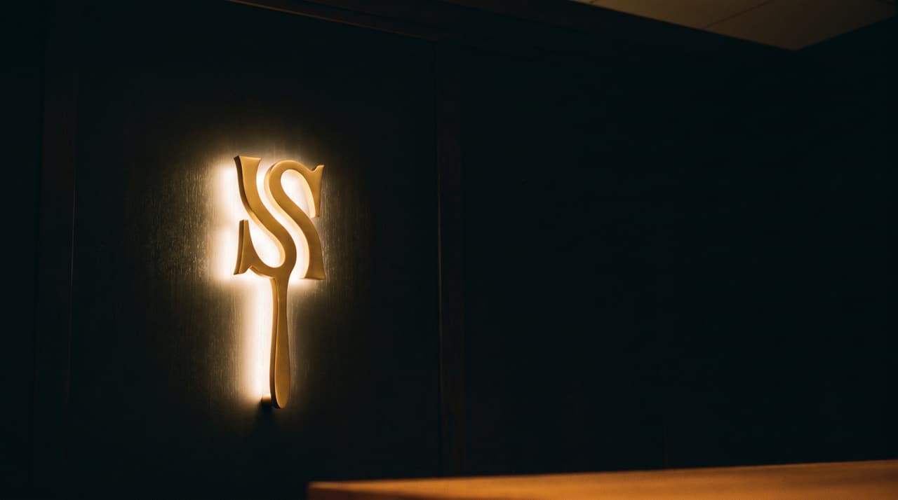
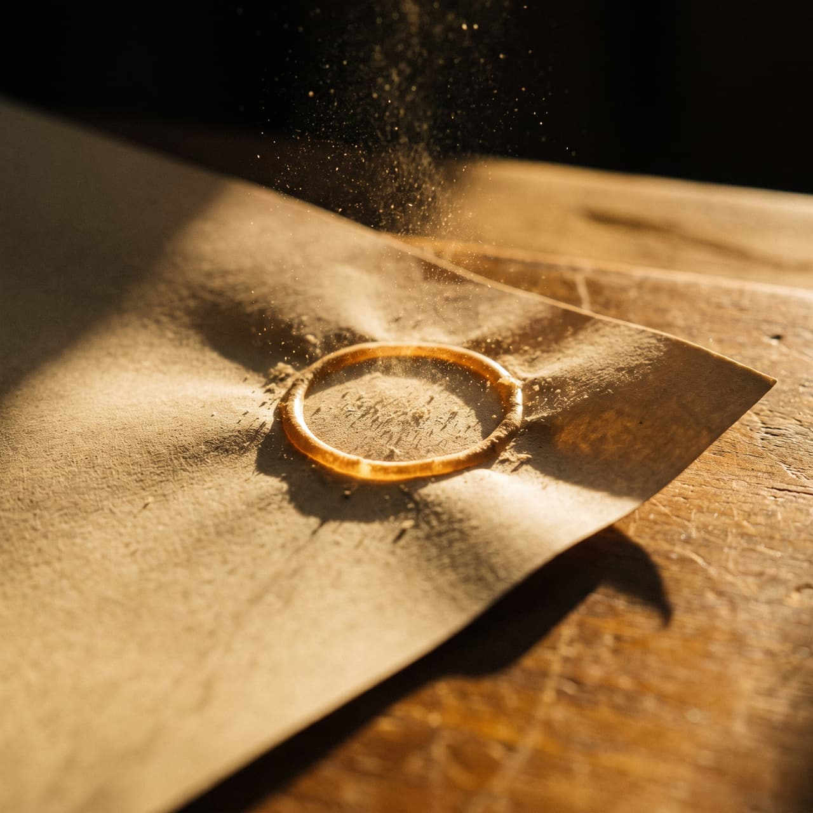
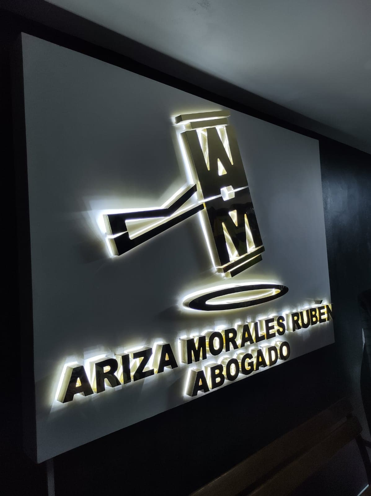
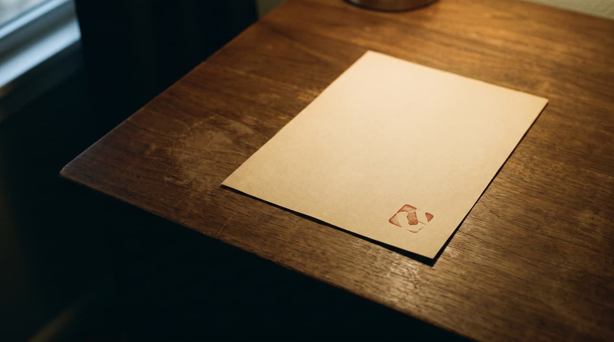
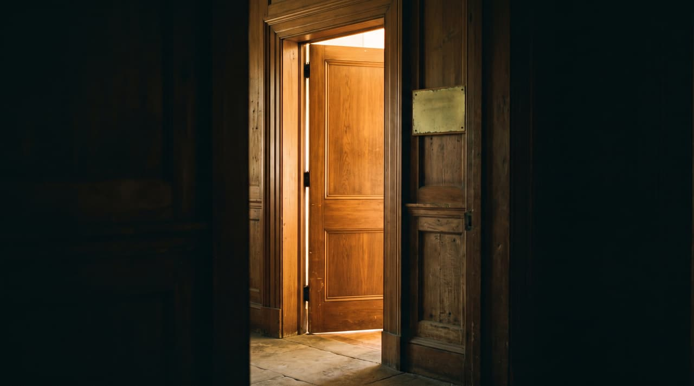

Tablero de flow — las transiciones corren, no se describen
Seis secciones y seis transiciones. Baja despacio: cada franja a pantalla completa ejecuta su transición atada a tu scroll — la misma mecánica que iría en la página, con su duración y su curva.
Se hereda el archivador y el FLIP de Mosby's Files (Tubik, Awwwards SOTD 13-ago-2026) y el loader honesto y el page-turn de 20 Years Inspired by People (/nk.studio, SOTD 07-ago-2026). El momento firma —el mazo de su logo sellando la ficha— es nuestro: ninguna de las dos remata con un impacto físico.

clip-path: polygon() 1:1 con el progreso real de carga
4 vértices a 4 — si no coinciden, no interpola
Su nombre y el C.A.C. 508 funcionan como carátula. Nada de "compromiso, experiencia y confianza": la primera pantalla ya dice que esto es un archivo.
Cuatro materias. Cuatro fólders.
opacity 0→1 + blur(9px→0) por carácter, con stagger
blur() es caro — solo en titulares cortos
Recuperación de crédito · Civil y familia · Penal · Litigio de tierras. Cada una la nombra un cliente suyo en Google. El fólder de Penal se ve más grueso porque tiene más prueba real detrás.
Flip.getState() → Flip.from()
1.5 s · power3.inOut · reflow puntual, no por frame

rotateZ del mazo (−52°→0) + onda y destello en el impacto
El mazo es SUYO — se vectoriza de su cartel, no se genera
El mazo de su logo cae en el instante en que el FLIP termina, y lo que queda en pantalla es el sello grabado en la ficha. Ni Mosby's ni NK Studio rematan con un impacto físico: uno gira una tapa, el otro desliza un panel.

El cabezal ES el monograma A·M, retroiluminado. Su marca no se genera: se usa.
Agradezco a esta firma eternamente por un tema de tocamientos indebidos contra mi familiar…
Alberto Daniel Palacios Orbegozo · Google · reseña verificable
Y como pieza aparte: su aparición en televisión, donde el rótulo dice "Rubén Ariza Morales · Abogado penalista". La fuente nunca somos nosotros.

rotateY corto de la hoja + xPercent del titular entrante
No vuelve al índice — se queda dentro del expediente
Hay una reseña de 1★ y el 5.0 es un promedio redondeado. Se dice "5.0 en Google · promedio de 222 reseñas" y nunca "222 veredictos perfectos": es falso y se comprueba en cinco segundos.
Si la página no la esconde, la prueba vale el doble. Es propuesta, no decisión tomada.

Sin formulario de por medio: WhatsApp 946 535 761. En este negocio, poder mandarle la prueba a alguien por chat es la conversión — por eso cada ficha tiene URL propia.